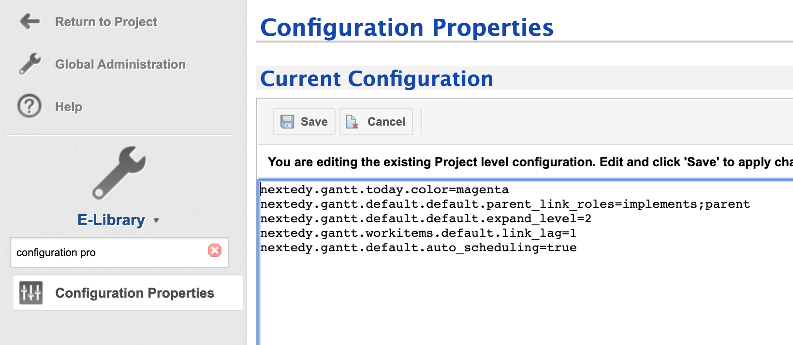

Default Configuration Properties
You can define following propererties in Administration > Configuration Properties

General Properties
nextedy.gantt.workitems.unplanned_color- Color of the unplanned item. The default is: #7D3C98nextedy.gantt.today.color- Color of today marker. The default is: graynextedy.gantt.classic_project"- Use the classic look of the project item type. The default is: falsenextedy.gantt.zoom.DD.min_column_width- The width of the timeline column in "DD" scale mode. The default is: 120nextedy.gantt.zoom.D.min_column_width- The width of the timeline column in "D" scale mode. The default is: 60nextedy.gantt.zoom.W.min_column_width- The width of the timeline column in "W" scale mode. The default is: 30nextedy.gantt.zoom.M.min_column_width- The width of the timeline column in "M" scale mode. The default is: 70nextedy.gantt.zoom.Q.min_column_width- The width of the timeline column in "Q" scale mode. The default is: 90nextedy.gantt.zoom.Y.min_column_width- The width of the timeline column in "Y" scale mode. The default is: 40nextedy.gantt.zoom.YY.min_column_width- The width of the timeline column in "YY" scale mode. The default is: 190nextedy.gantt.debug- Enable client side debug messages. The default is: falsenextedy.gantt.default.auto_scheduling- Toggle auto-scheduling by default. The default is: falsenextedy.gantt.default.critical_path- Toggle visualization of critical path by default. The default is: false
Work Items Gantt Widget Properties Defaults
Following settings are used as a default values when you add a Widget to a page. Once the widget is added to the page, the widget property values are used.
nextedy.gantt.workitems.default.sort_by- Default value for "Sort By" property. Default is: idnextedy.gantt.workitems.default.expand_level- Default value for "Load children" property, it specifies how many levels should be added to the dataset. Default is: 0nextedy.gantt.workitems.default.show_unplanned- Default value for "Show Unplanned" property. Default is: truenextedy.gantt.workitems.default.scale- Default value for "Scale" property. Default is: Wnextedy.gantt.workitems.default.parent_link_roles- Default value for "Parent Link Roles" property. It is a list of link role IDs separated by ";". Default is: emptynextedy.gantt.workitems.default.dependency_link_roles- Default value for "Dependency Link Roles" property. It is a list of link role IDs separated by ";". Default is: emptynextedy.gantt.workitems.default.start_field"- Default value for "Start Field" property. Default is: gantt_startnextedy.gantt.workitems.default.end_field- Default value for "End Field" property. Default is: nonenextedy.gantt.workitems.default.duration_field- Default value for "Duration Field" property. Default is: gantt_durationnextedy.gantt.workitems.default.progress_field- Default value for "Progress Field" property. Default is: gantt_progressnextedy.gantt.workitems.default.maximize_view- Default value for "Maximize" property. Default is: falsenextedy.gantt.workitems.default.hide_toolbar- Default value for "Hide Toolbar" property. Default is: falsenextedy.gantt.workitems.default.progress_coloring- Default value for "Progress Coloring" property. Default is: truenextedy.gantt.workitems.default.drag_children- Default value for "Drag Children" property. Default is: truenextedy.gantt.workitems.default.max_items- Default value for "Max Items" property. Default is: 100nextedy.gantt.workitems.default.show_today_marker- Default value for "Show Today Marker" property. Default is: truenextedy.gantt.workitems.default.working_time- Default value for "Show Today Marker" property. Default is: true
Additional defaults, not yet possible to be configured on specific instance of Gantt Widget
nextedy.gantt.workitems.default.forward_dependency- By default in Polarion there is a link role DEPENDS_ON, linking task A with task B, so A depends on B (A can be started after B), if you link the tasks other way around (from B to A), set this to true. The default value is: falsenextedy.gantt.workitems.default_duration- the default duration of an item, if not specified in task itself, in days. The default is: 10nextedy.gantt.workitems.default.link_lag- the default lead/lag time for dependency links. Default it: 0
Plans Gantt Widget Properties Defaults
These value are used as a default values when you add a Widget to a page. Once it is added, the widget values are used.
nextedy.gantt.plans.default.sort_by- Default value for "Sort By" property. Default is: idnextedy.gantt.plans.default.expand_level- Default value for "Load children" property, it specifies how many levels should be added to the dataset. Default is: 0nextedy.gantt.plans.default.show_unplanned- Default value for "Show Unplanned" property. Default is: truenextedy.gantt.default.plans.scale- Default value for "Scale" property. Default is: Wnextedy.gantt.plans.default.maximize_view- Default value for "Maximize" property. Default is: falsenextedy.gantt.plans.default.hide_toolbar- Default value for "Hide Toolbar" property. Default is: falsenextedy.gantt.plans.default.progress_coloring- Default value for "Progress Coloring" property. Default is: truenextedy.gantt.plans.default.drag_children- Default value for "Drag Children" property. Default is: truenextedy.gantt.plans.default.max_items- Default value for "Max Items" property. Default is: 100nextedy.gantt.plans.default.show_today_marker- Default value for "Show Today Marker" property. Default is: truenextedy.gantt.plans.default.working_time- Default value for "Show Today Marker" property. Default is: true